Projects
Selected engineering and academic projects
MOSFET Physics and SONOS Memory Analysis using Sentaurus TCAD
Completed
May 2026
1. Introduction
This project focuses on understanding Synopsys Sentaurus TCAD simulation. The main objective was to simulate semiconductor devices in a virtual environment and visualize their electrical and physical behavior by adjusting device parameters and command code. Through numerical simulation, MOSFET operation, short-channel effects (SCE), device optimization techniques, and SONOS memory operation were investigated. This project connected theoretical semiconductor concepts with practical device simulation and visualization.
2. TCAD Workflow
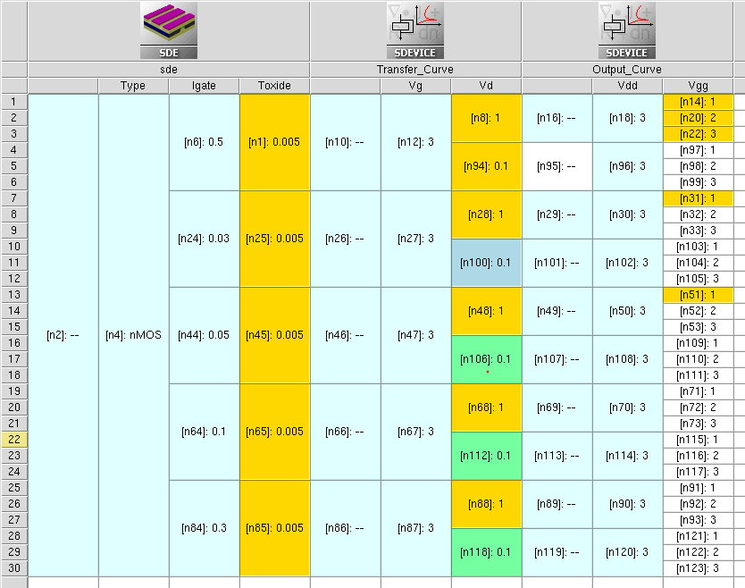
Sentaurus Workbench was used to organize the simulation flow. Device structures were created in Sentaurus Structure Editor (SDE), electrical characteristics were simulated in Sentaurus Device (SDevice), and physical quantities were visualized in Sentaurus Visual.
3. Device Construction
Doping Structure
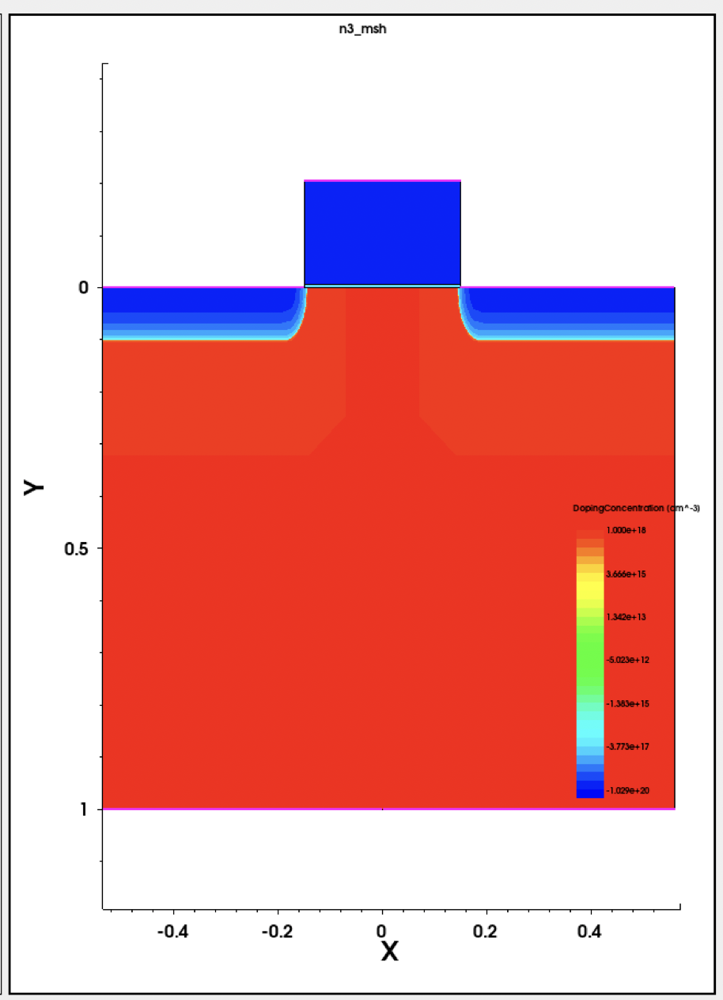
The nMOS device structure was generated using Sentaurus Structure Editor (SDE). The source and drain regions were heavily doped, while the substrate remained lightly doped to form p-n junctions.
Mesh Structure
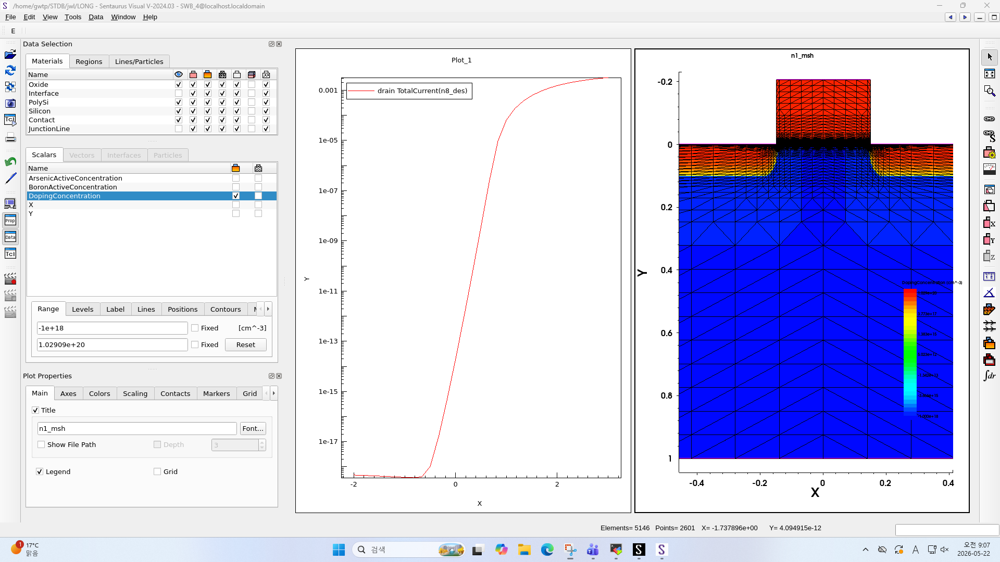
Mesh refinement was applied near the gate oxide and source/drain junctions, where strong electric-field gradients occur. Fine meshing improves numerical accuracy in regions with rapid physical variation.
4. MOSFET Fundamentals
Output Characteristics
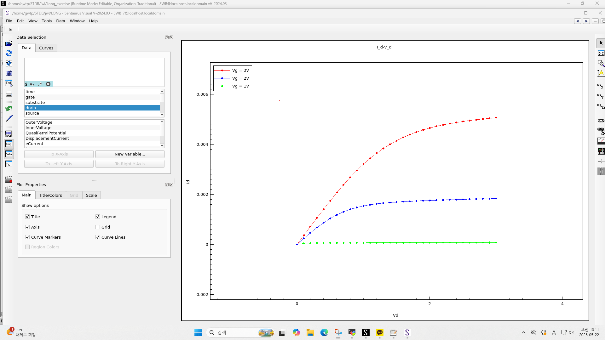
The drain current increases linearly at low drain voltage and gradually enters saturation as the channel approaches pinch-off. Higher gate voltage produces stronger inversion and increases the drain current.
Transfer Characteristics
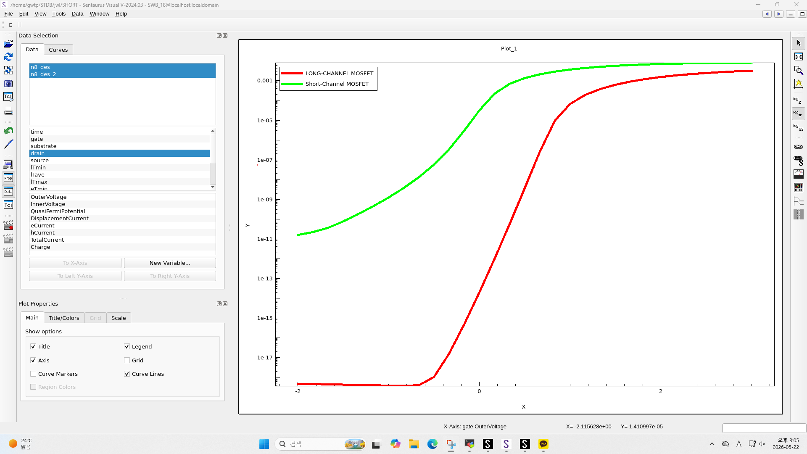
The transfer curve shows the transition from cutoff to strong inversion. Current below the threshold voltage follows exponential behavior, known as subthreshold conduction.
Long-Channel vs. Short-Channel MOSFET
Compared with the long-channel device, the short-channel MOSFET shows larger off-state leakage and degraded gate control. This behavior is caused by stronger drain-channel coupling.
5. Short-Channel Effects
Threshold Voltage Roll-Off
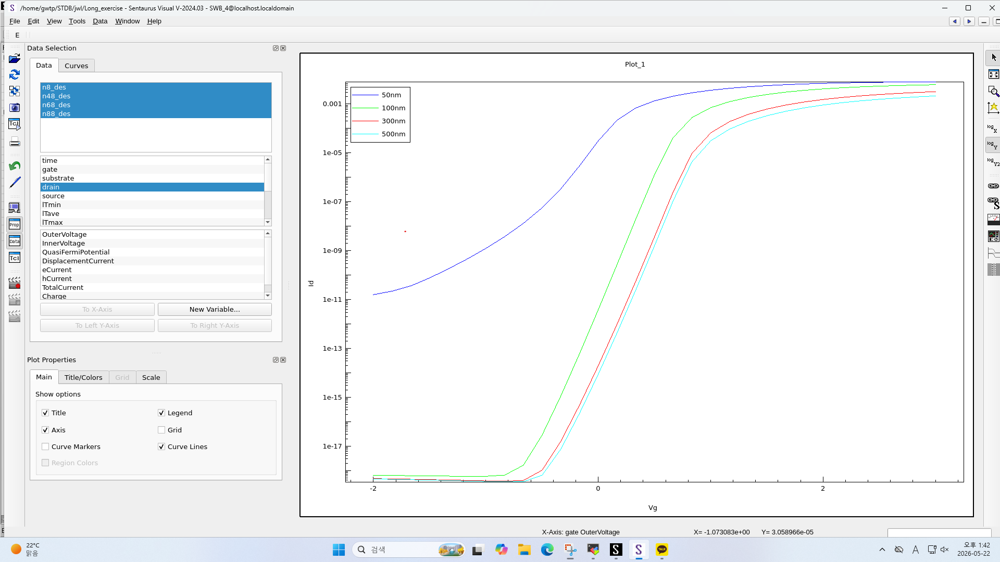
As channel length decreases, threshold voltage decreases due to charge sharing between the source and drain depletion regions. This effect is known as threshold voltage roll-off.
Subthreshold Swing Degradation
The 50 nm device exhibits a more gradual subthreshold slope and higher leakage current. This degradation results from increased short-channel effects and weaker gate control over the channel.
DIBL
Increasing drain bias lowers the source-channel potential barrier and effectively reduces threshold voltage. This phenomenon is known as Drain-Induced Barrier Lowering (DIBL).
Punch-Through
When the source and drain depletion regions merge, carriers can flow directly between the source and drain without sufficient gate control. This leakage mechanism is known as punch-through current.
6. Short-Channel Improvement
LDD Structure
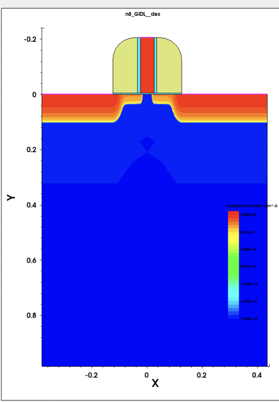
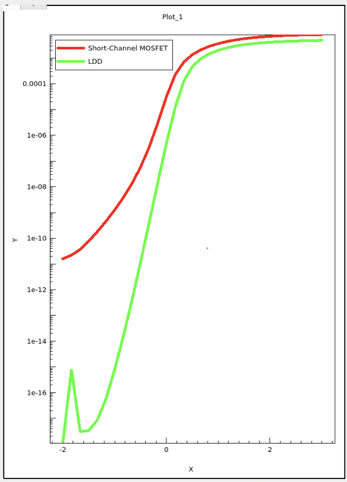
A lightly doped drain (LDD) extension was introduced between the channel and the heavily doped drain region. The LDD device exhibits lower leakage current and improved subthreshold behavior because the drain electric field is distributed over a larger distance, reducing DIBL and hot-carrier effects.
Halo+LDD vs. LDD Implantation
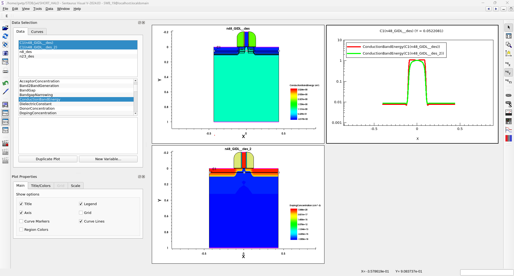
Halo implantation introduces a locally higher body doping concentration near the source and drain junctions. Compared with the LDD-only structure, the Halo+LDD device exhibits a steeper conduction-band profile near the channel edges, indicating stronger electrostatic confinement and improved gate control.
The additional halo doping suppresses depletion-region encroachment from the source and drain, allowing the channel potential barrier to maintain a more abrupt and well-defined shape. As a result, DIBL, punch-through current, and short-channel effects are reduced while subthreshold behavior is improved.
LDD + HALO vs. Short-Channel : Transfer Characteristic Comparison
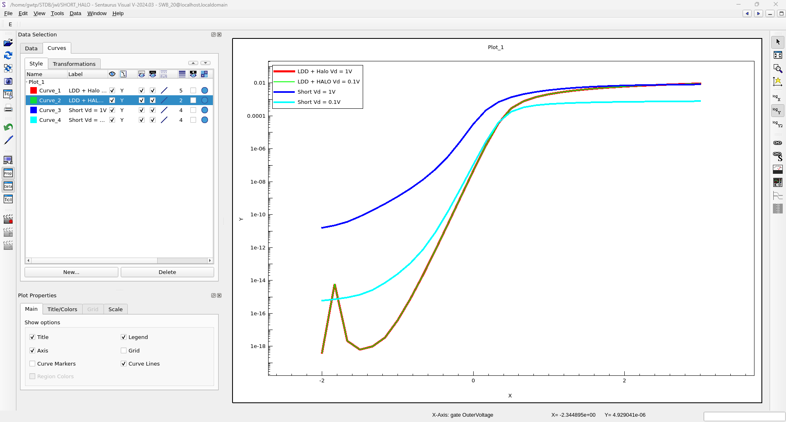
The transfer characteristics of the conventional short-channel MOSFET and the Halo+LDD device were compared under different drain biases. The conventional short-channel device exhibits larger threshold voltage variation and increased off-state leakage as drain voltage increases.
In contrast, the Halo+LDD structure maintains a steeper subthreshold slope and reduced drain-bias dependence. The improved electrostatic control suppresses DIBL and short-channel effects, resulting in lower leakage current and more stable threshold voltage behavior.
7. Gate-Induced Drain Leakage (GIDL)
GIDL Current Characteristics
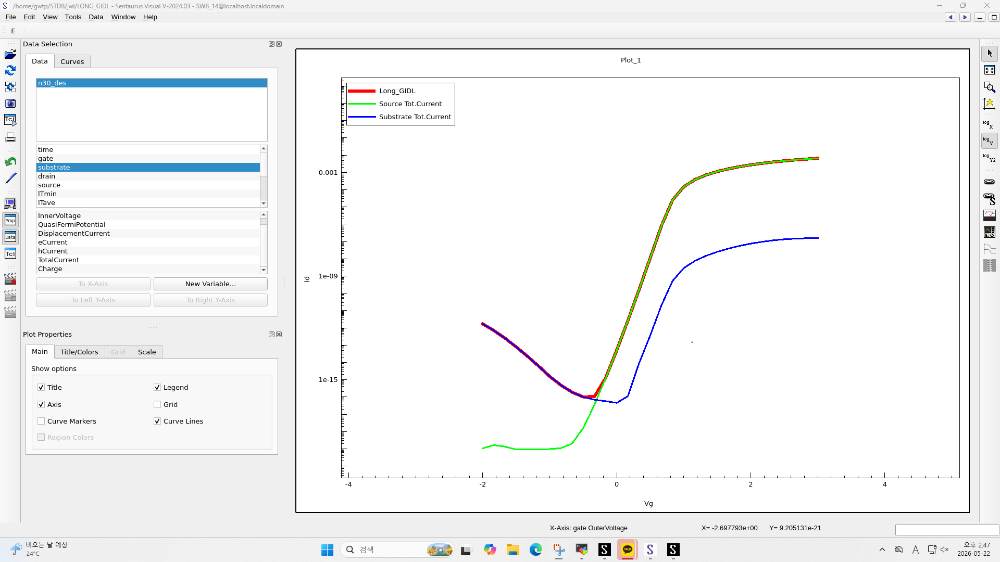
Gate-Induced Drain Leakage (GIDL) was investigated by monitoring the drain, source, and substrate current components during a gate-voltage sweep. Under large negative gate bias, a strong electric field develops near the gate-drain overlap region, inducing band-to-band tunneling and generating leakage current even when the channel remains off.
The drain and source currents represent the resulting leakage path, while the substrate current indicates carrier generation inside the silicon body. The appearance of measurable current under negative gate bias confirms the onset of GIDL leakage caused by high-field tunneling rather than normal channel conduction.
8. SONOS Memory
SONOS Structure and Conduction Band Diagram
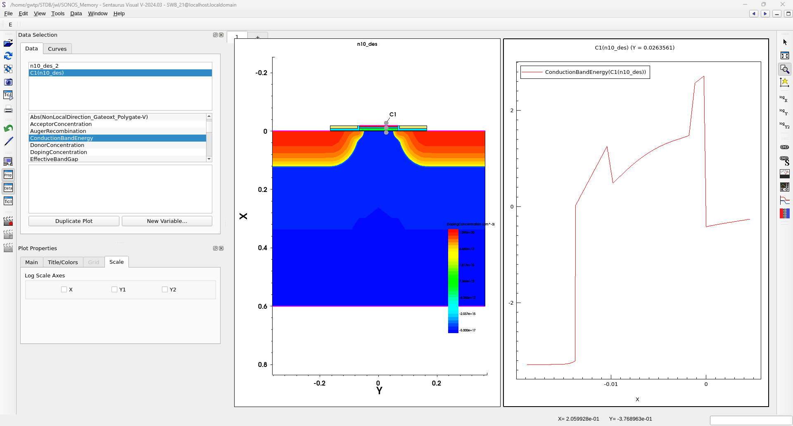
SONOS memory consists of an oxide-nitride-oxide stack, where charge is stored inside the silicon nitride layer. Unlike a floating-gate memory device, SONOS stores charge in localized trap states within the nitride layer.
The conduction-band profile illustrates the tunneling barrier between silicon and the nitride storage layer. Under programming bias, electrons tunnel through the thin oxide layer and become trapped inside the nitride layer.
Programming Operation
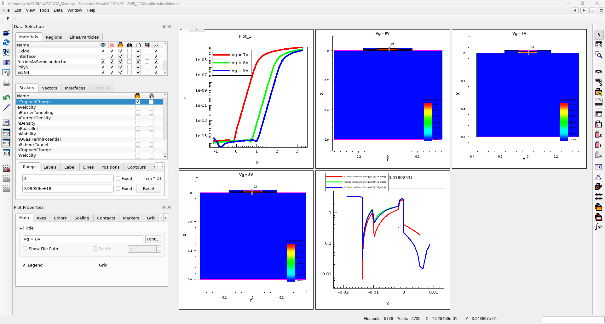
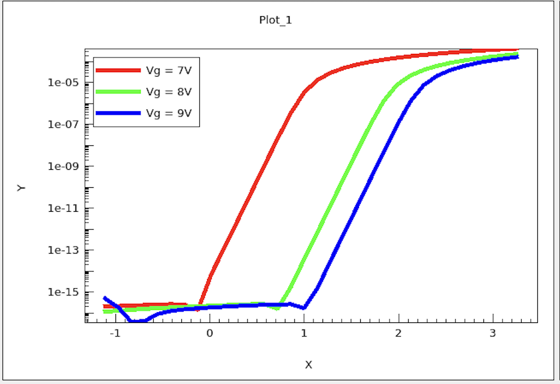
Increasing gate voltage increases electron trapping inside the nitride layer. Higher trapped charge produces a larger threshold voltage shift. The transfer curves shift toward higher threshold voltage as more charge is trapped, representing the programmed memory state.
Erase Operation
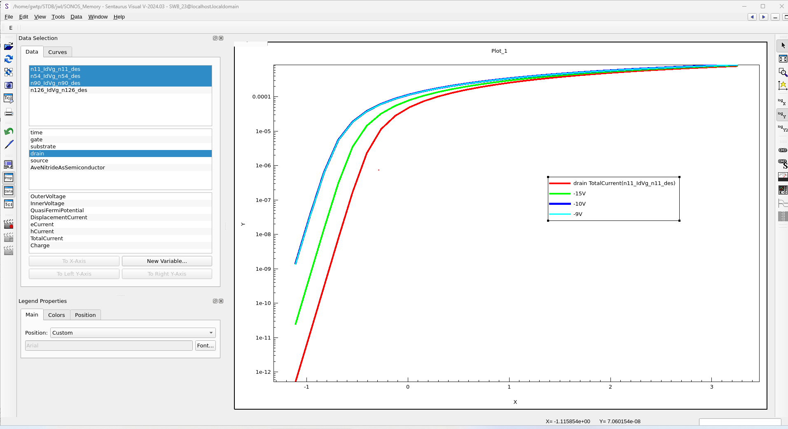
As the erase voltage becomes more negative, more trapped electrons are removed from the nitride layer, resulting in a lower threshold voltage and a stronger erase effect.
However, when the erase voltage becomes excessively large (e.g., -15 V), the strong electric field may induce unwanted charge injection or charge redistribution within the ONO stack, causing the threshold voltage to increase again.
9. CMOS Integration Theory
CMOS fabrication consists of FEOL processes for transistor formation and BEOL processes for interconnect fabrication. FEOL includes oxidation, photolithography, implantation, shallow trench isolation (STI), and well formation. BEOL includes metallization, chemical mechanical polishing (CMP), and interconnect formation.
Reflection
Through TCAD simulation, semiconductor concepts that were previously studied only theoretically became visually observable. In particular, short-channel effects, subthreshold conduction, DIBL, GIDL, and SONOS memory operation were better understood by examining electrical characteristics and physical distributions directly from simulation results.
Project Materials
Certificate of Completion issued by the Korea Semiconductor Training Institute (KSTI). Completed the TCAD Simulation for Nanoelectronic Device Design (Intermediate Level) training program (24 hours).
MOSFET I-V Characteristic Analysis
Completed
Spring 2026
Project Overview
This project focuses on understanding the fundamental physics behind MOSFET operation and experimentally examining its current–voltage (I–V) characteristics. To prepare for the experiment, I studied the theoretical foundations of semiconductor devices, including carrier behavior, energy-band concepts, p–n junction physics, and MOS capacitor behavior under different bias conditions.
Based on this theoretical background, I built a breadboard setup using an n-channel MOSFET to measure and analyze its I–V characteristics under different gate and drain bias conditions. The project emphasizes connecting device physics theory to practical measurement and data analysis.
My Experience / Project Concept
To prepare for this project, I focused on building a strong theoretical foundation in semiconductor physics. I studied concepts such as crystal lattice structure, energy–momentum (E–k) diagrams, density of states (DOS), Fermi level, and carrier behavior under thermal equilibrium and non-equilibrium conditions.
I also studied MOS capacitor physics and band diagram behavior under bias, with particular attention to depletion and inversion conditions. In addition, I explored threshold voltage formation, realistic threshold voltage behavior in practical devices, and current–voltage relationships in the linear and saturation regions of MOSFET operation.
Through this process, I connected theoretical device physics concepts to real experimental measurements by constructing a hardware setup, collecting I–V data, estimating threshold voltage, and analyzing device behavior using plotted measurement results.
One limitation of this project was that the analysis was primarily based on electrical measurements, and I was not able to directly investigate fabrication-related parameters such as mobility, oxide thickness, or channel geometry.
The derivation of I-V equations:
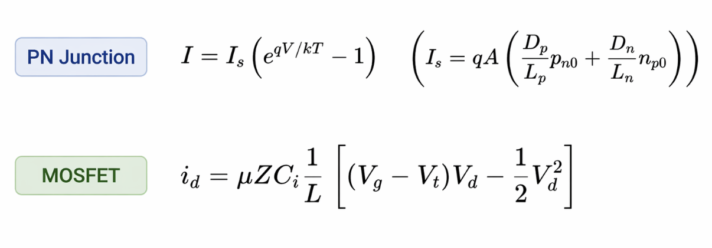
Key Topics and Concepts Applied
- MOS Capacitor Operation and Band Diagram Under Bias
- Inversion Layer Formation and Threshold Voltage
- Realistic Threshold Voltage Estimation from Measured Data
- MOSFET I–V Characteristics (Linear and Saturation Regions)
- Gate Leakage Characteristics (Ig–Vg and Ig–Vd Behavior)
- Breadboard Circuit Implementation and Device Measurement
- Experimental Data Collection and Curve Analysis
Skills
- Semiconductor Device Physics
- MOSFET Operation Principles
- MOS Capacitor and Band Diagram Analysis
- Carrier Transport (Drift and Diffusion)
- Threshold Voltage Extraction from Experimental Data
- Breadboard Circuit Implementation
- Electrical Measurement and Data Analysis
Project Report
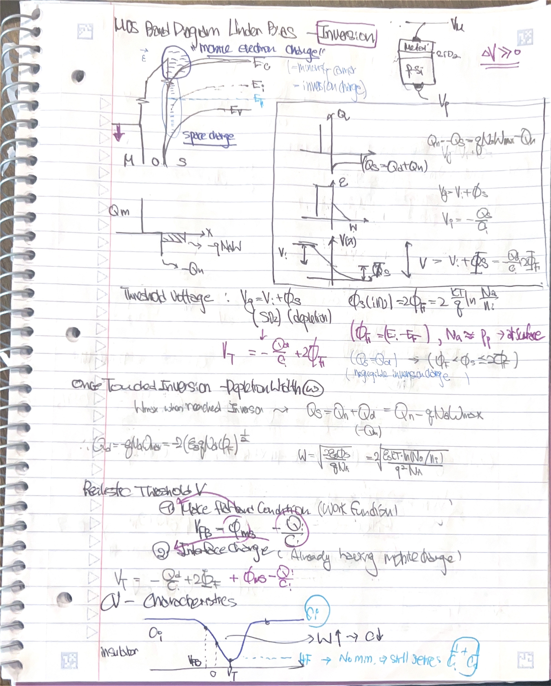
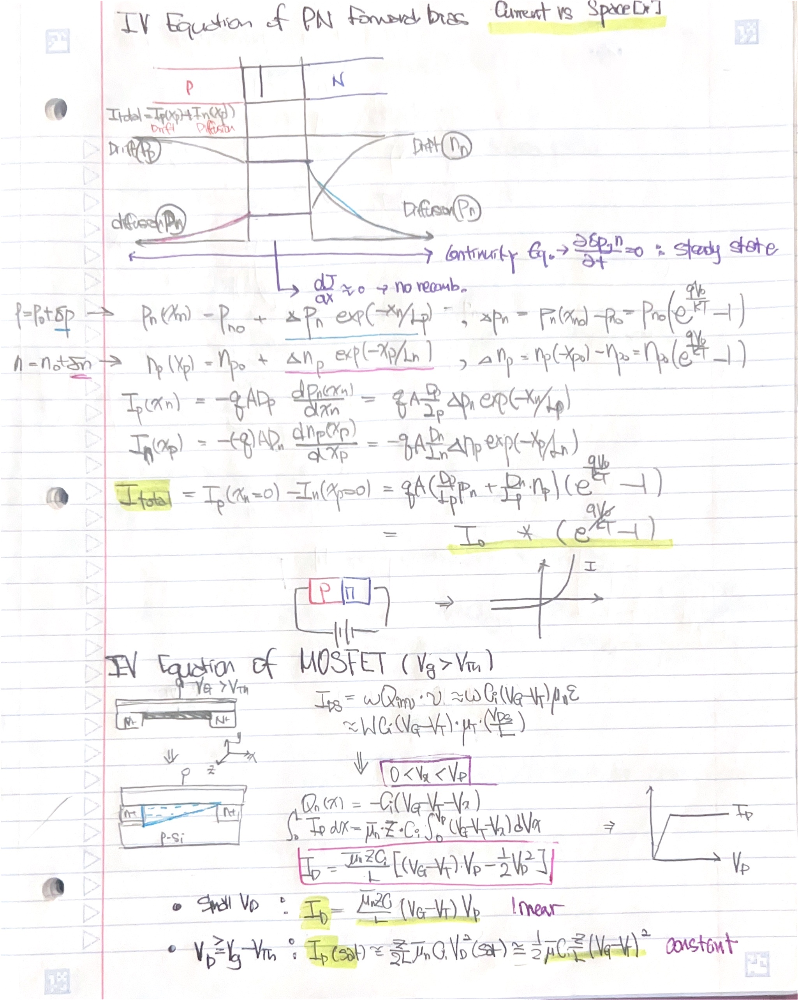
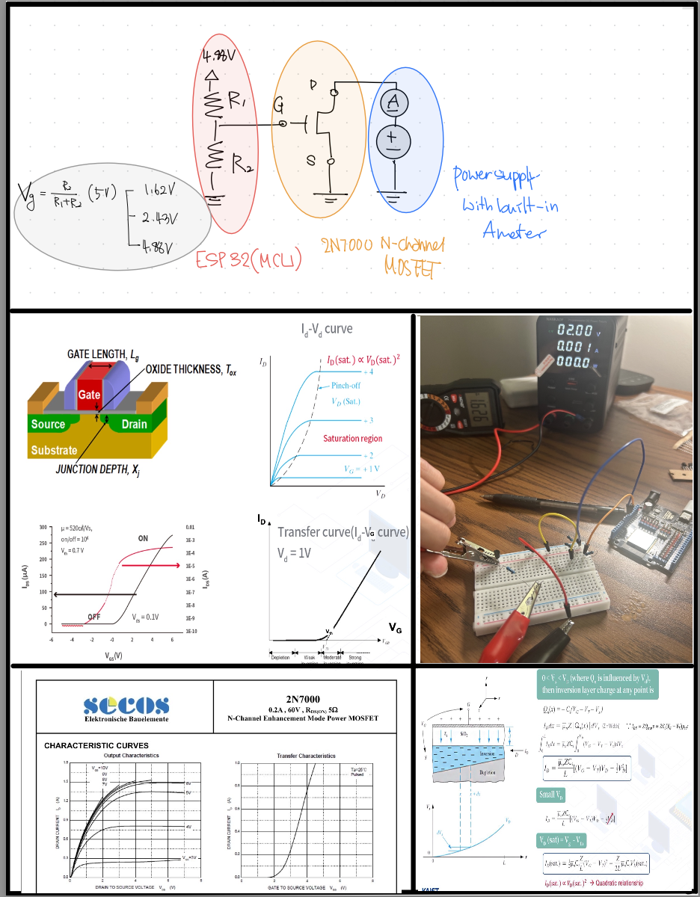

Project Materials
Digital Tram Control System Design(FSM)
Completed
Fall 2025
Project Overview
This project involved designing a digital tram control system for an airport transportation setting using a finite state machine (FSM). The client requirement was to create a control system based on four given signals, while the overall FSM structure and implementation strategy were left open-ended. I designed a 6-state tram control system that determines motion and stopping behavior based on the relative progression of states rather than absolute floor position, making the design applicable regardless of the number of stops.
A key objective of my design was hardware minimization. Starting from the state diagram and present-state / next-state relationships, I repeatedly refined the state table and applied Karnaugh map (K-map) minimization to exploit symmetry and repeated logic patterns. By maximizing useful groupings and reducing Boolean expressions, I implemented the system with only 3 D flip-flops, 5 AND gates, 3 OR gates, and 2 NOT gates. The project was verified through digital simulation and received a full score.
My Experience / Project Concept
This project helped me strengthen my understanding of sequential logic design beyond basic FSM construction. I learned how to move from a conceptual control problem to a complete hardware-oriented implementation by building a state diagram, deriving a state table, simplifying logic with K-maps, and validating behavior through simulation. More importantly, I focused on designing the control logic as efficiently as possible rather than only making it function, which gave me stronger insight into digital hardware optimization.
Skills
- Finite State Machine (FSM) Design
- Combinational Logic Design
- Sequential Logic Design
- Karnaugh Map (K-map) Minimization
- Boolean Logic Simplification
- Digital Hardware Design
- Verilog / Digital Simulation
Project Report


Project Materials
Solar Panel Monitoring System
Completed
Aug 2025 – Dec 2025
Project Overview
This project involved building a microcontroller-based solar panel monitoring system designed to measure real-time voltage, current, and power from a small-scale solar setup. The system integrated an analog front-end using operational amplifiers, voltage dividers, and a shunt resistor to condition signals for ADC interfacing.
I designed the measurement circuitry, implemented embedded firmware on an Arduino platform, and validated system behavior using laboratory instruments. The project strengthened my understanding of analog signal conditioning, hardware integration, and practical system-level measurement in an embedded environment.
Skills
- Arduino Programming
- Analog Circuit Design
- Operational Amplifier (Op-Amp) Circuits
- Voltage Divider and Shunt Resistor Design
- ADC Interfacing
- Oscilloscope Measurement
- Multimeter Testing
- Embedded System Integration
Project Images
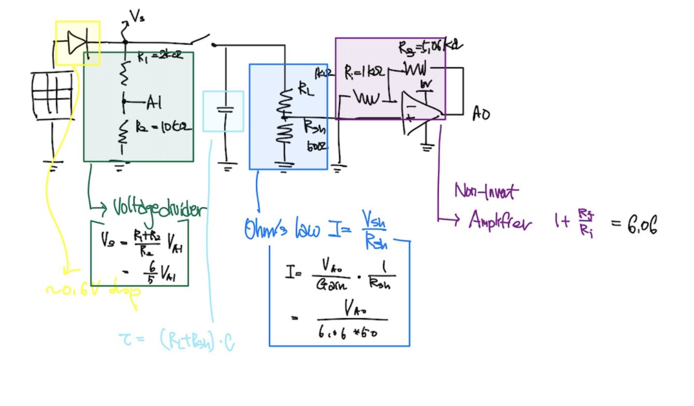
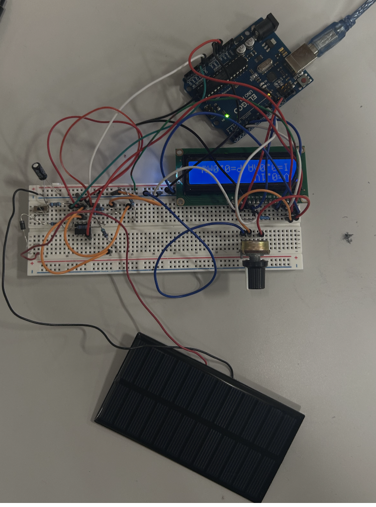
Project Materials
Band-Pass Filter Design & Analysis
Completed
Nov 2024 - Dec 2024
Project Overview
This project focused on the design, theoretical analysis, and experimental verification of a band-pass filter (BPF). The goal was to understand how the circuit passes signals within a specific frequency range while attenuating signals outside that range, and to compare theoretical predictions with measured experimental behavior.
I derived the transfer function in the Laplace domain, analyzed cutoff frequencies, center frequency, and bandwidth, and used Bode plot concepts to interpret the circuit response in the frequency domain. Experimental measurements were then collected and compared with theoretical calculations. The results showed that the measured bandwidth matched the theoretical value closely, while the center frequency showed a larger deviation that was ultimately explained by component tolerances in the resistors and capacitors.
My Experience / Project Concept
This project helped me strengthen my understanding of frequency-domain circuit analysis and the relationship between mathematical modeling and real experimental behavior. I learned how to move from circuit configuration to transfer-function derivation, estimate filter characteristics using theoretical expressions, and interpret discrepancies between theory and measurement. In particular, I gained practical insight into how component tolerances influence the center frequency and overall filter response in real hardware.
Skills
- Band-Pass Filter Analysis
- Laplace-Domain Circuit Analysis
- Transfer Function Derivation
- Bode Plot Interpretation
- Frequency Response Measurement
- Cutoff Frequency / Bandwidth Analysis
- Oscilloscope / PropScope Measurement
- Experimental Data Analysis
Project Images
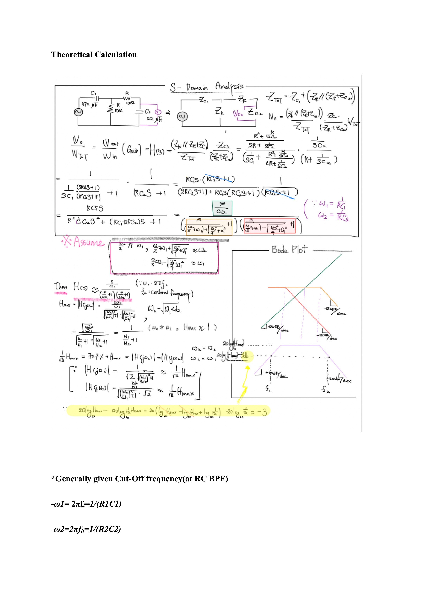